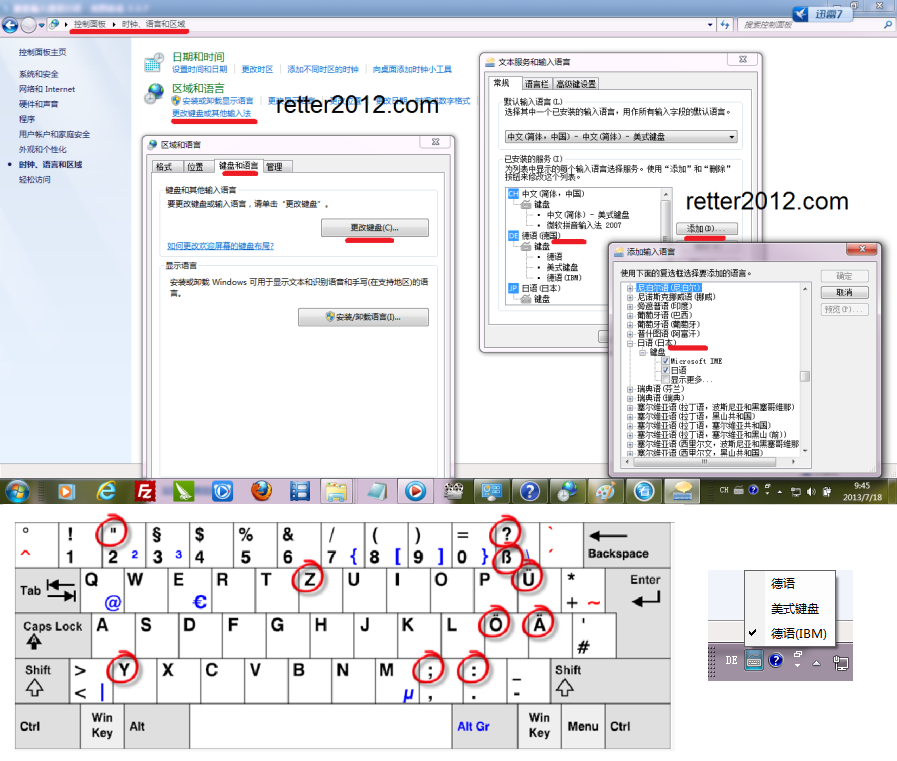

返回主页
计算机键盘语言设置

听说读写是四种不同的技能，请根据自己的需要修炼。
通过电脑学语言，事半功倍。没事到网上去冲冲浪吧！
德语报纸杂志列表：
1）Frankfurter Allgemeine Zeitung
2）德国《明镜》周刊
3）Westdeutsche Allgemeine Zeitung
4）世界
5）时代
6）焦点
7）图片
有时候，德语媒体与英语媒体讲的故事并不相同。这些差异正是研究的重点。比如“优等民族”一说，英语就把错误全盘算在德国头上。而德语媒体则刨根问底，认为“优等民族”（das Herrenvolk）是19世纪西欧为了让殖民地合法化而创造的一种意识形态。如此一来，以英国为首的殖民帝国就难逃干系了！这些“优等民族”在殖民地干了不少坏事呢！
美国领导世界
“优等民族”考
version:1.0; jobnet@188.com © retter2012.com